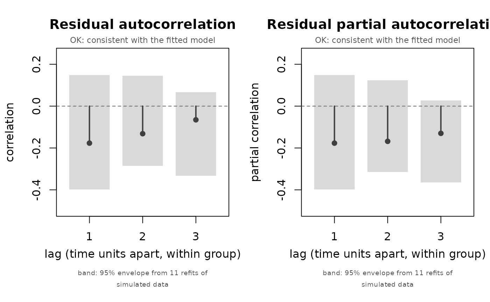

Autocorrelation and partial-autocorrelation plots with verdicts
Source:R/ilm_plot_acf.R, R/zzz-iml-aliases.R
ilm_plot_acf.RdDraws the residual autocorrelation of a fitted model, within group and by lag, against an envelope built by simulating from the fit and refitting. Lags the check flags are coloured, and the panel is annotated with what the pattern means and what to do about it.
Usage
ilm_plot_acf(
object,
time,
group,
maxlag = 8L,
B = 100L,
which = "both",
ncores = 1L,
seed = 1L,
colour = "grey25",
fill = "grey85",
alpha = NULL,
size = 1,
main = NULL,
verbose = FALSE,
...
)Arguments
- object
A fitted
"ilm_model", or the value returned byilm_check_ar(), which lets the plot reuse that call's refits instead of paying for them twice.- time
Integer time index, one per observation. Ignored when
objectalready carries an envelope.- group
Grouping variable, one per observation.
- maxlag
Integer. Largest lag to examine.
- B
Integer. Simulated datasets behind the envelope. No p-value can fall below
1/(B+1), so roughly 100 is needed beforeFAILis reachable.- which
"both","acf"or"pacf".- ncores
Integer. Worker processes for the refits.
- seed
Integer. Random seed.
- colour
Colour for lags that are not flagged.
- fill
Band fill colour.
- alpha
Band transparency, in the ggplot2 sense.
- size
Scaling for points and spikes.
- main
Title. With
which = "both"it is used for the first panel.- verbose
Logical. Also print the per-lag table.
- ...
Unused, present so the
plot()method can pass through.
Value
Invisibly, the "ilm_ar_envelope" object behind the plot, which can
be passed straight back in to redraw without refitting.
Why not acf()
stats::acf() treats its input as one series and draws a
plus or minus 2/sqrt(n) band. Neither is right here. Panel data stacked
long is many short series, and pairing across the joins manufactures
correlation that is not there; and the 2/sqrt(n) band assumes independent
observations from an exactly-correct model, which in-sample residuals from a
mixed model are not. Both problems push in the same direction, toward
flagging autocorrelation that does not exist.
Reading the two panels together
For an autoregressive process of order p the partial autocorrelation cuts off after lag p while the ordinary one decays geometrically; for a moving-average process the ordinary one cuts off and the partial one decays. So the partial panel is the one that tells you the order, which is what decides whether an AR(1) term is enough.
What the colours mean
The band is drawn at the critical value the p-value is computed against, so a
point outside the band is exactly a lag the check flags. Flagged lags are
coloured by verdict – amber for WARN, red for FAIL – regardless of
colour, because there the colour is the verdict. Lags with too few
usable pairs to estimate are marked with a cross on the zero line rather than
silently omitted.
See also
ilm_check_ar() for the table and the p-values,
ilm_check_variance() for the other within-group assumption.
Examples
set.seed(1)
d <- ilm_sim(n_id = 20, n_period = 8)
f <- ilm_model(score ~ income + (1 | id), data = d, family = "gaussian",
verbose = FALSE)
ilm_plot_acf(f, time = as.integer(factor(d$date)), group = d$id,
maxlag = 3, B = 12)
#> Warning: B = 12 puts the smallest achievable p-value at 0.077, so a FAIL verdict is unreachable. Use B >= 100.
